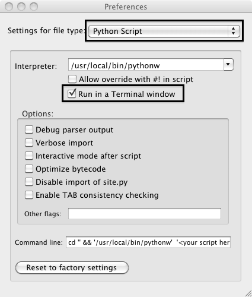

Go to
python.org, locate the Mac download and install it. You should now have an folder in your applications directory called "Python 3.1". Inside it there should be an application "Python Launcher.app". Go to "File > Open" in that application. Select the script "client.py" from wherever you saved it.
It didn't work!
